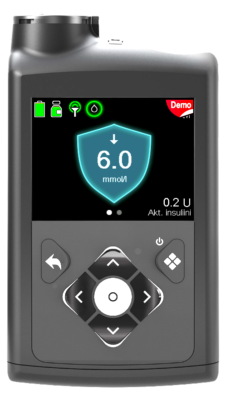
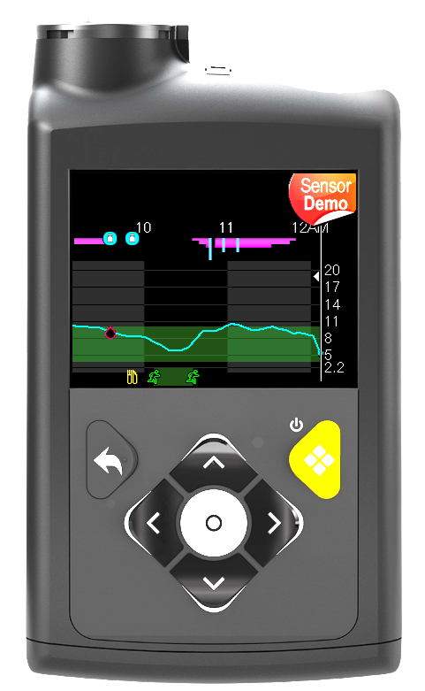
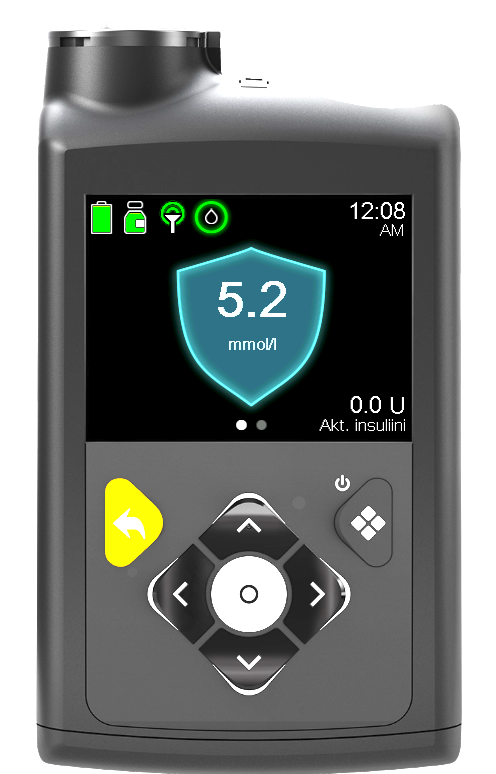

📊 Trendit
Sensorin glukoosiarvon (SG) lisäksi voidaan seurata trendinuolia.
Trendinuoli kertoo, mihin suuntaan verensokeri on muuttumassa ja kuinka nopeasti muutos tapahtuu.
📱 Tarkista tämänhetkinen trendi
Pumpun alkunäkymässä näkyvät sensorin glukoosiarvo (SG) sekä mahdollinen trendinuoli.

📈 Tarkastele trendin kehitystä
Trendinäkymästä voidaan tarkastella tarkemmin, miten verensokeri on muuttunut viimeisen ajan aikana.
Alla olevassa kuvassa näkyy voimakkaasti laskeva trendi, jossa verensokeri on laskemassa nopeasti.

↩️ Palaa takaisin alkunäkymään
Poistu trendinäkymästä painamalla takaisin-painiketta.

📈 Trendinuolten merkitys
Trendinuolet perustuvat verensokerin muutosnopeuteen.
Mitä enemmän trendinuolia näkyy, sitä nopeammin verensokeri muuttuu.
| Trendinuoli | Muutos noin 20 minuutissa | Merkitys | Nouseva esimerkki | Laskeva esimerkki |
|---|---|---|---|---|
| Ei trendinuolta | Alle 1,2 mmol/l muutos | Verensokeri pysyy tasaisena tai muuttuu hitaasti. | 7,2 → 7,4 mmol/l | 7,4 → 7,2 mmol/l |
| ↑ / ↓ | Noin 1,2–2,2 mmol/l muutos | Verensokeri muuttuu. | 7,2 → 8,8 mmol/l | 8,8 → 7,2 mmol/l |
| ↑↑ / ↓↓ | Noin 2,2–3,4 mmol/l muutos | Verensokeri muuttuu nopeasti. | 7,2 → 10,0 mmol/l | 10,0 → 7,2 mmol/l |
| ↑↑↑ / ↓↓↓ | Yli 3,5 mmol/l muutos | Verensokeri muuttuu erittäin nopeasti. | 7,2 → 11,0 mmol/l | 11,0 → 7,2 mmol/l |
Esimerkit kuvaavat noin 20 minuutin aikana tapahtuvaa muutosta. Todellinen tilanne arvioidaan aina yhdessä sensorin glukoosiarvon (SG), trendinuolen ja lapsen voinnin perusteella.
↗️ Nouseva trendi
Kun pumpussa näkyy ylöspäin osoittava trendinuoli, verensokeri on nousussa.
Huomioi:
- Onko ruokailu tapahtunut?
- Onko ateriabolus annettu?
- Onko aktiivista insuliinia?
Jos korkea verensokeri pitkittyy, katso: 📈 Korkea verensokeri
↘️ Laskeva trendi
Kun pumpussa näkyy alaspäin osoittava trendinuoli, verensokeri on laskussa.
Huomioi:
- Onko liikunta alkamassa tai meneillään?
- Onko aktiivista insuliinia?
- Onko lapsella matalan oireita?
Jos verensokeri on matala tai laskee nopeasti, katso: 🩸 Matalat
✅ Muista
- Trendinuolta tarkkaillaan silloin, kun pumpussa näkyy nuoli.
- Katso aina SG-arvo ja trendinuoli yhdessä.
- Mitä enemmän nuolia näkyy, sitä nopeampi muutos on.
- Lapsen vointi huomioidaan aina tilanteen arvioinnissa.